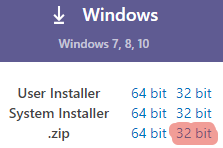
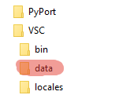
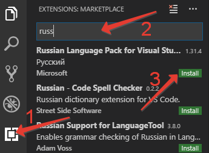
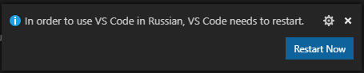
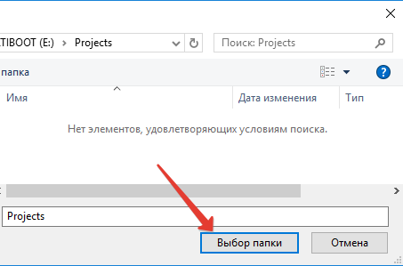
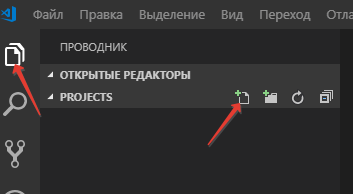
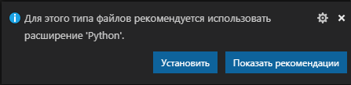
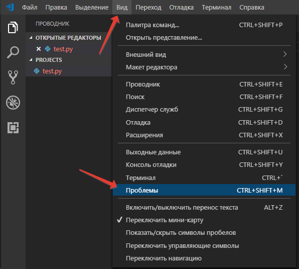
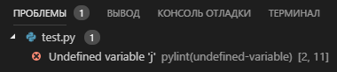
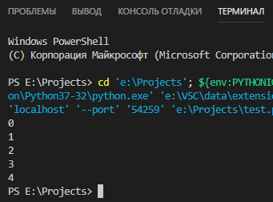

Лекция 1. Среда разработки: Visual Studio Code (Setup)¶
Интегрированных сред разработки (IDE), сделанных специально для Python, фактически нет — большинство современных редакторов и IDE поддерживают разработку сразу на нескольких языках. На занятиях мы используем Visual Studio Code (VS Code) — лёгкий кроссплатформенный бесплатный редактор от Microsoft с поддержкой плагинов. Расширения превращают его в полноценную IDE для Python, Go, JavaScript и десятков других языков.
В этой лекции:
- установим VS Code (в том числе в переносном режиме);
- русифицируем интерфейс;
- настроим расширения для Python и Go;
- разберёмся со встроенным отладчиком.
Установка¶
Скачайте дистрибутив с официальной страницы. Под Windows доступны три варианта: установщик пользовательский (User Installer), системный (System Installer) и архив .zip для переносного (portable) режима. Под macOS — .dmg или .zip, под Linux — .deb/.rpm или tarball.
Переносной режим (portable)¶
Переносной режим хранит все настройки в подкаталоге программы, не трогая реестр или домашний каталог пользователя. Это позволяет носить VS Code на флешке и пользоваться им на любом компьютере.
Для перевода в портативный режим:
-
Скачайте дистрибутив в виде
.zip-архива (на Windows — обязательно, на macOS/Linux — также есть.zip/tar.gz).
-
Распакуйте архив в любой каталог на носителе.
-
Создайте в этом каталоге подкаталог
data(на macOS —code-portable-dataрядом с приложением).
После следующего запуска VS Code увидит каталог data и перейдёт в переносной режим.
Русификация интерфейса¶
VS Code поддерживает установку плагинов из магазина (Marketplace):
- Откройте панель Extensions (значок с кубиками в боковой панели или
Ctrl/Cmd+Shift+X). - Введите в строке поиска
russian. - Найдите и установите Russian Language Pack for Visual Studio Code.

После установки VS Code предложит перезапустить себя — соглашайтесь.

Русифицировать имеет смысл только локализованную версию интерфейса. На занятиях и в документации мы будем использовать английские названия пунктов меню в скобках — это полезно, потому что англоязычная документация по VS Code более полная.
Открытие проекта¶
VS Code считает проектом отдельный каталог (workspace). В нём редактор хранит локальные настройки (.vscode/settings.json), отладочные конфигурации (.vscode/launch.json), там же ищет репозиторий Git и виртуальное окружение Python.
Откройте папку проекта через меню File → Open Folder (Файл → Открыть папку) или с экрана приветствия.

Переключитесь в режим Explorer (Проводник) в левой панели и создайте новый файл с расширением .py:

Настройка для Python¶
При создании первого .py-файла VS Code предложит установить расширение Python от Microsoft — это связка из нескольких инструментов (Pylance для подсказок и типов, отладчик debugpy, поддержка тестов и virtualenv).

После установки и перезапуска включите панель Problems (Вид → Проблемы) — туда расширение выводит обнаруженные ошибки.

Напишем простой код с опечаткой и сохраним файл:
В панели Problems появится Undefined variable 'j' — расширение Python отслеживает ошибки и показывает их положение в коде (строка и колонка):

Исправьте опечатку — print(i) — сохраните файл, теперь ошибка пропала.
Запуск и отладка¶
Нажмите F5 (или Run → Start Debugging) — программа запустится в встроенном терминале. При первом запуске VS Code предложит выбрать конфигурацию отладчика — выберите Python File.

Возможности встроенного отладчика:
- точки останова (breakpoints) — клик слева от номера строки;
- шаги —
F10(Step Over),F11(Step Into),Shift+F11(Step Out); - просмотр переменных — панель Variables слева;
- выражения для слежения — панель Watch;
- стек вызовов — панель Call Stack.
Современные расширения для Python (2025)¶
| Расширение | Назначение |
|---|---|
Python (ms-python.python) |
Базовая поддержка: запуск, отладка, окружения, тесты. |
Pylance (ms-python.vscode-pylance) |
Быстрый языковой сервер: автокомплит, переходы, проверка типов. |
Ruff (charliermarsh.ruff) |
Линтер и форматтер — современная замена flake8 + black + isort. |
Python Debugger (ms-python.debugpy) |
Адаптер отладчика (устанавливается автоматически как зависимость). |
В pyproject.toml обычно настраивают ruff и pytest, чтобы не повторять конфиг в каждом редакторе:
[tool.ruff]
line-length = 100
target-version = "py314"
[tool.ruff.lint]
select = ["E", "F", "I", "B", "UP"]
Настройка для Go¶
Для Go-разработки используется официальное расширение Go (golang.go). После установки VS Code предложит подтянуть набор инструментов: gopls (языковой сервер), dlv (отладчик Delve), gofmt/goimports, staticcheck и др.
Проект Go начинается с инициализации модуля:
Создайте main.go:
Запуск из терминала — go run ., отладка из VS Code — F5 (расширение Go само сконфигурирует Delve).
Сравнение типичной настройки¶
| Аспект | Python | Go |
|---|---|---|
| Языковой сервер | Pylance | gopls |
| Отладчик | debugpy | delve (dlv) |
| Форматтер | ruff / black | gofmt (встроен в go fmt) |
| Линтер | ruff / mypy | staticcheck / go vet |
| Менеджер зависимостей | uv (или pip/poetry) |
go mod (встроен) |
Полезные горячие клавиши¶
| Действие | macOS | Windows/Linux |
|---|---|---|
| Командная палитра | Cmd+Shift+P |
Ctrl+Shift+P |
| Быстрое открытие файла | Cmd+P |
Ctrl+P |
| Боковой переход | Cmd+B |
Ctrl+B |
| Терминал | Cmd+` |
Ctrl+` |
| Поиск по проекту | Cmd+Shift+F |
Ctrl+Shift+F |
| Запуск отладки | F5 |
F5 |
| Перейти к определению | F12 |
F12 |
| Переименовать символ | F2 |
F2 |
| Форматировать файл | Shift+Option+F |
Shift+Alt+F |
Settings Sync¶
VS Code умеет синхронизировать настройки, расширения и горячие клавиши между машинами через аккаунт GitHub или Microsoft (меню Settings Sync). Это удобнее, чем переносной режим, если работаете с собственного устройства.
Контрольные вопросы¶
- Что такое переносной режим VS Code и в каких случаях он удобен?
- Какой минимальный набор расширений нужен для комфортной работы с Python? С Go?
- Чем
Pylanceотличается от расширенияPython? - Какие современные инструменты заменяют связку
flake8 + black + isort? - Чем горячие клавиши
F10,F11иShift+F11различаются в отладчике? - Что хранится в
.vscode/launch.json, а что — в.vscode/settings.json? - Как настроить отладку Go в VS Code и какой инструмент при этом используется?